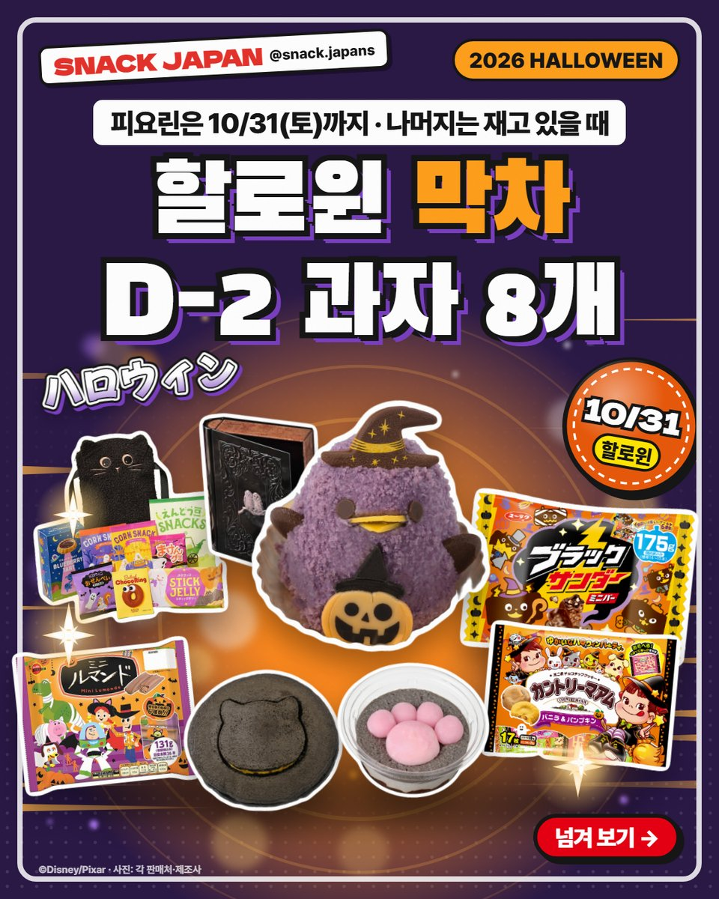
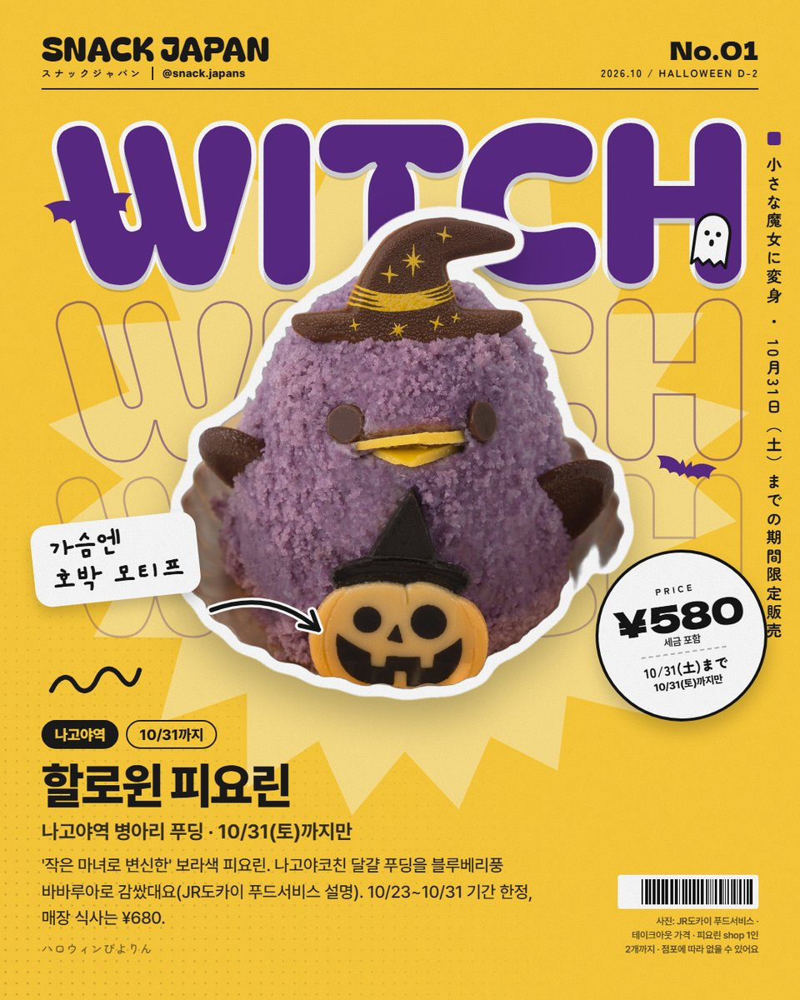
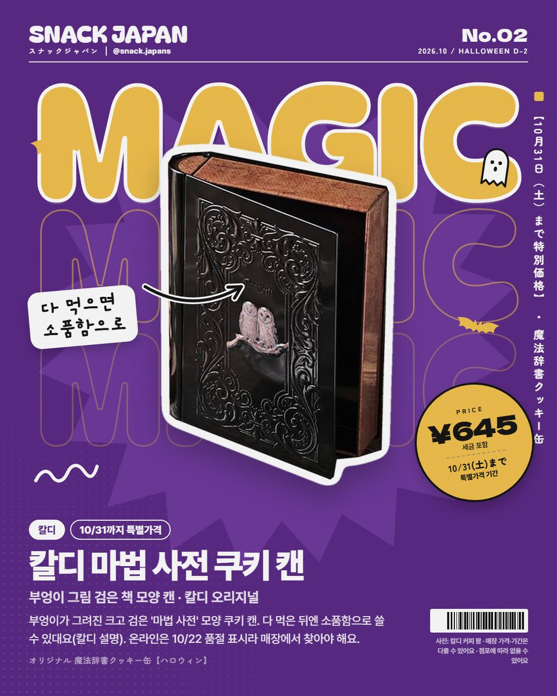
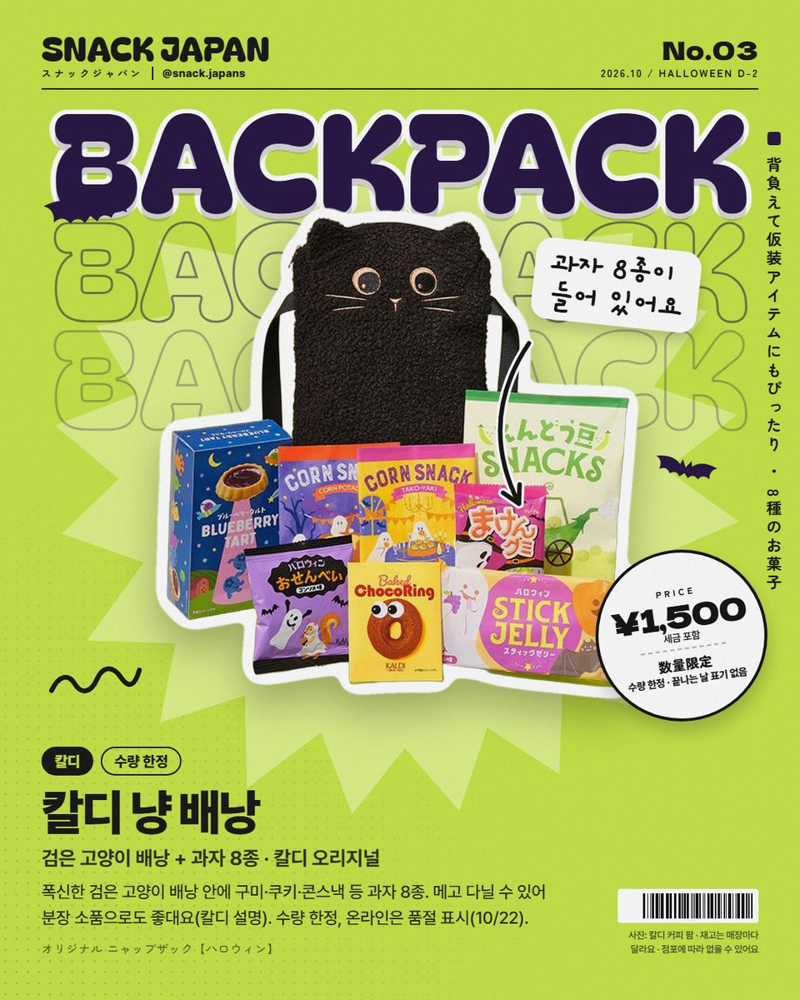
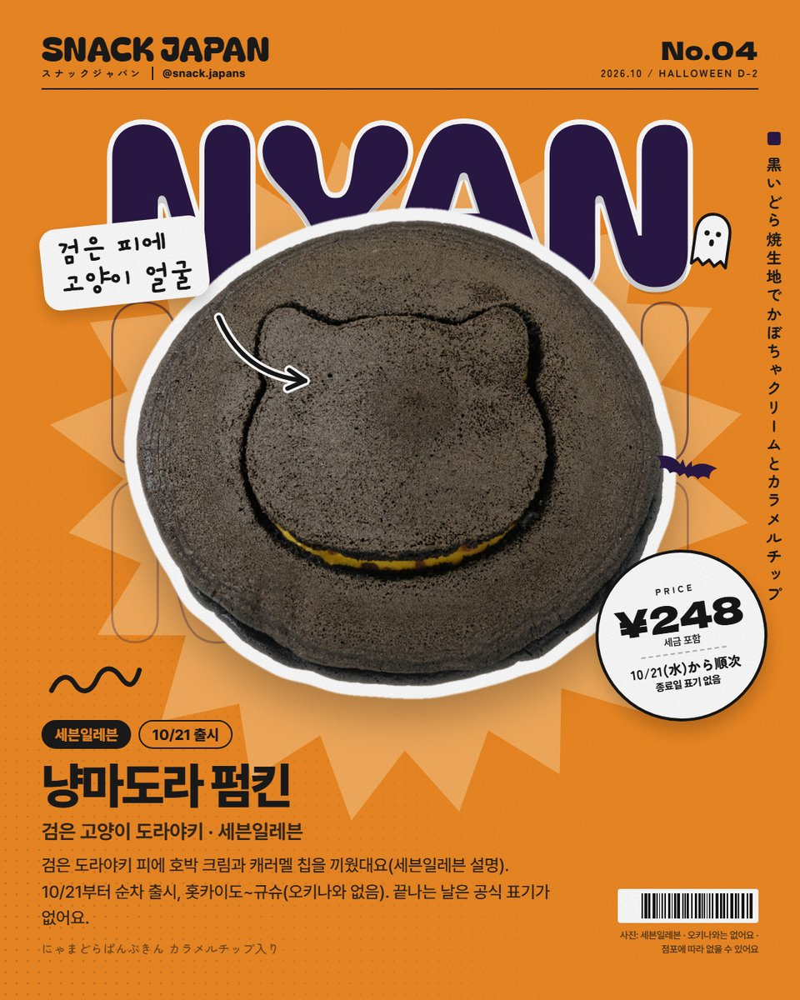
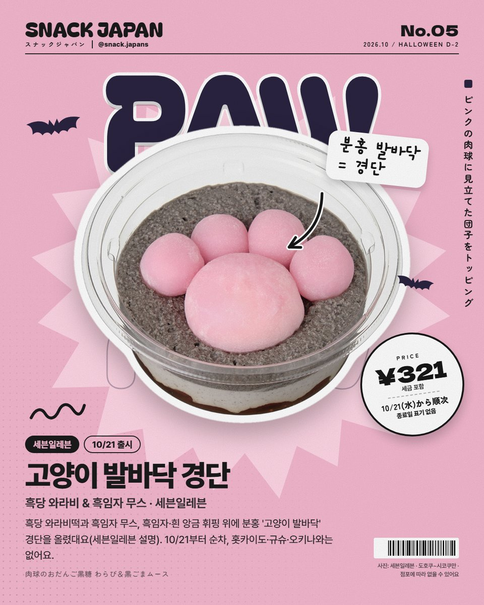
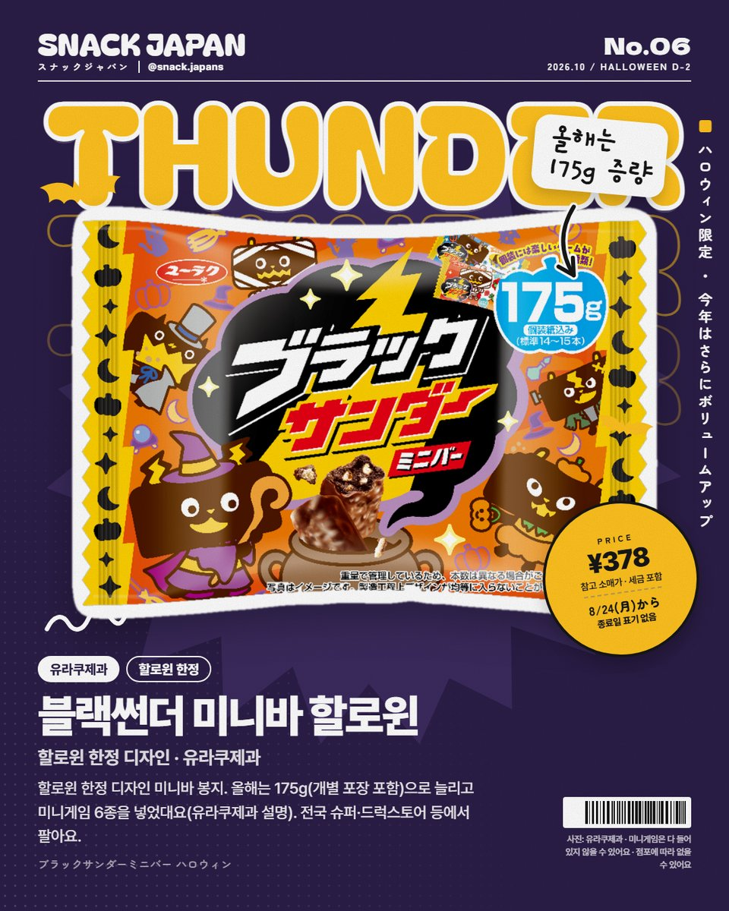
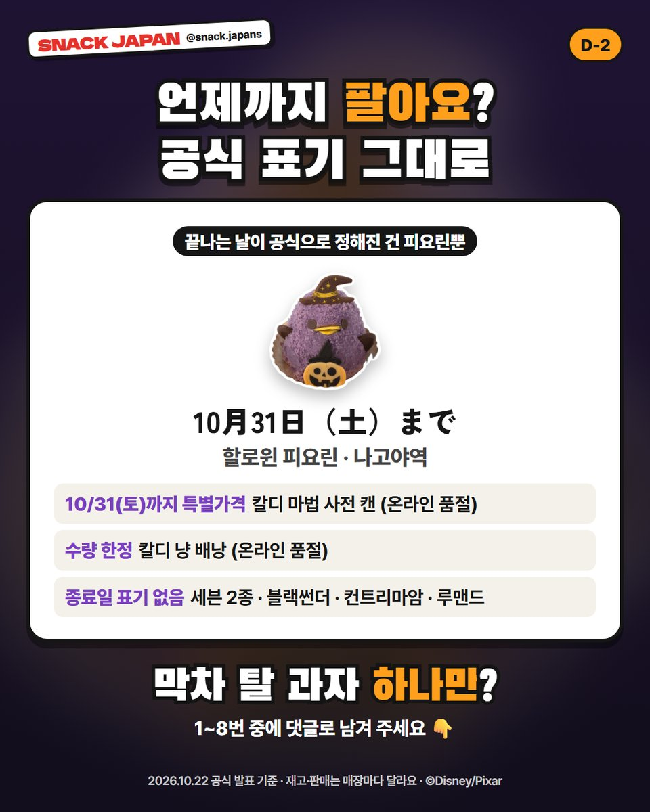

일본 할로윈 한정 과자 막차 8가지, 언제까지 파는지 공식 표기로 정리
할로윈까지 D-2! 끝나는 날이 공식으로 정해진 건 나고야역 '할로윈 피요린' 하나뿐이에요. 칼디·세븐일레븐·블랙썬더까지 막차 과자 8개 모음.
할로윈까지 딱 이틀 남았어요 🎃
일본 할로윈 한정 과자, 아직 못 샀다면 지금이 막차!
그런데 '언제까지 파는지'는 상품마다 달라요.
공식 발표에 적힌 그대로 8개를 정리해 볼게요!

1. 할로윈 피요린 (나고야역)
나고야역 명물 병아리 푸딩 '피요린'이
올해는 작은 마녀로 변신했어요.
나고야코친 달걀 푸딩을 블루베리풍 바바루아로 감쌌대요(JR도카이 푸드서비스 설명).
- 판매: 10/23(금)~10/31(토) 기간 한정
- 파는 곳: 나고야역 피요린 shop(1인 2개까지)·아틀리에점, 매장 식사는 피요린 village
- 가격: 사진 카드에 정리해 뒀어요

2. 칼디 마법 사전 쿠키 캔
부엉이가 그려진 크고 검은 '마법 사전' 모양 쿠키 캔이에요.
다 먹은 뒤엔 소품함으로 쓸 수 있대요(칼디 설명).
- 칼디 특집 표기: '10월 31일(토)까지 특별가격'
- 온라인 스토어는 10/22 품절 표시 → 매장에서 찾아야 해요

3. 칼디 냥 배낭
폭신한 검은 고양이 배낭 안에
구미·쿠키·콘스낵 등 과자 8종이 들어 있어요.
메고 다닐 수 있어서 분장 소품으로도 좋대요(칼디 설명).
- 수량 한정, 끝나는 날 표기는 없어요
- 온라인 스토어는 10/22 밤 품절 표시

4. 세븐일레븐 고양이 디저트 2종
할로윈 주간인 10/21(수)부터 순차로 나온 고양이 디저트예요.
할로윈 한정이라는 표기는 없고, 끝나는 날도 공식 표기가 없어요.
- 냥마도라 펌킨: 검은 도라야키 피에 호박 크림과 캐러멜 칩(세븐일레븐 설명) · 홋카이도~규슈(오키나와 없음)
- 고양이 발바닥 경단: 흑당 와라비떡·흑임자 무스 위에 분홍 발바닥 경단(세븐일레븐 설명) · 도호쿠~시코쿠


5. 블랙썬더 미니바 할로윈
할로윈 한정 디자인 미니바 봉지예요.
올해는 175g으로 양을 늘리고, 포장에 미니게임 6종을 넣었대요(유라쿠제과 설명).
- 파는 곳: 일본 전국 슈퍼·드럭스토어 등
- 끝나는 날 공식 표기는 없어요

6. 지난번 할로윈 편에서 소개한 2개
- 할로윈 컨트리마암(후지야): 펌킨맛이 할로윈 한정, '기간 한정'
- 디즈니 미니 루맨드 할로윈(부르봉): 토이 스토리 디자인, 부르봉 '기간 한정' 목록에 10/22에도 있었어요
둘 다 끝나는 날은 공식 표기가 없어요.
7. 언제까지 파는지, 한눈에
- 10/31(토)까지: 할로윈 피요린
- 10/31(토)까지 특별가격: 칼디 마법 사전 쿠키 캔
- 수량 한정: 칼디 냥 배낭
- 종료일 표기 없음: 세븐 2종·블랙썬더·컨트리마암·루맨드 (재고·매장마다 달라요)

총평
- 추천: 할로윈 주간에 나고야역 지나가는 분, 칼디 할로윈 굿즈 좋아하는 분
- 기준: 2026년 10월 22일 공식 발표
- 참고: 한정 상품이라 매장에 따라 없거나 먼저 끝날 수 있어요
할로윈 지나면 못 만나는 아이들,
하나만 고른다면 뭐가 좋아요? 🎃
사진: JR도카이 푸드서비스 · 칼디 커피 팜 · 세븐일레븐 · 유라쿠제과 · 후지야 · 부르봉 / ©Disney/Pixar